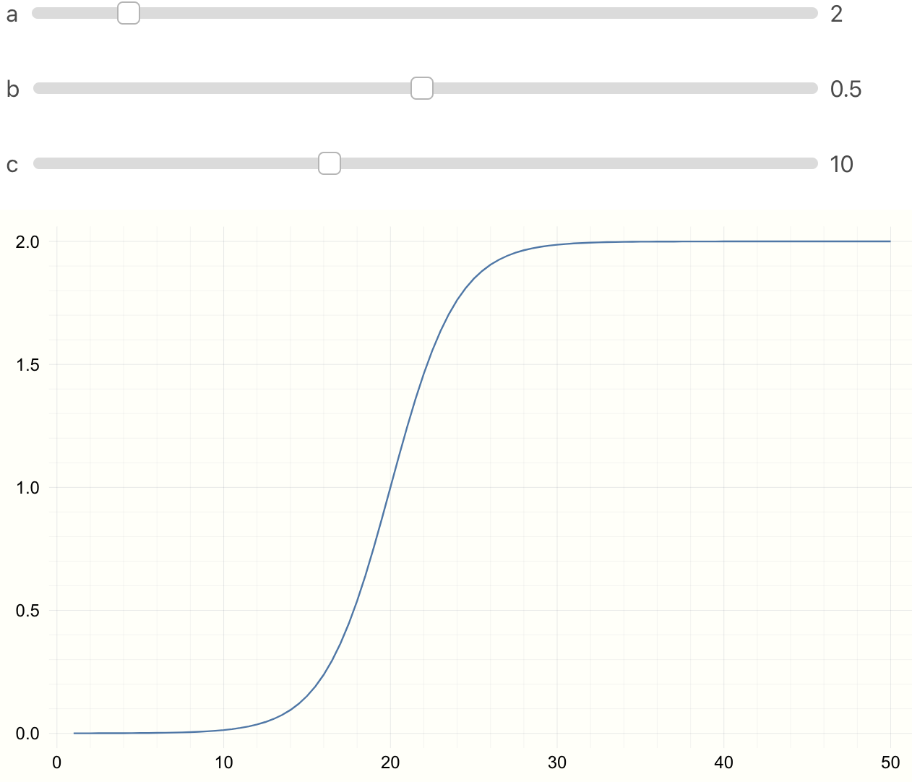
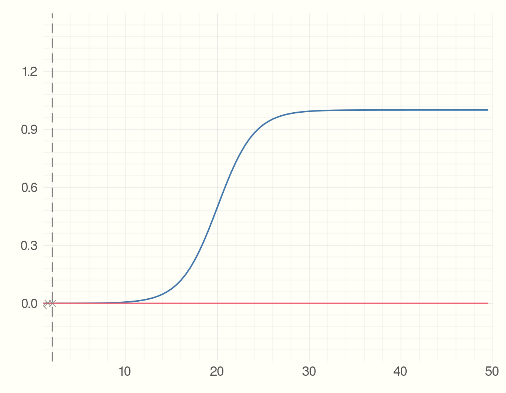
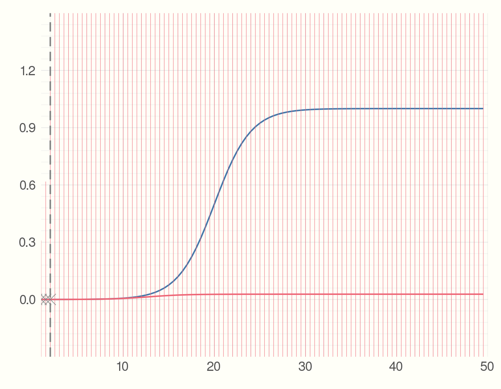

'Forecasting s-curves is hard' - a Julia tour
Epidemiological Enthusiasm
In the past few weeks the twitter-verse has seen a deluge of amateur epidemiological models and forecasts (though some of them are quite nice [1]) Due to the ongoing Coronavirus pademic its understandable that data science enthusiasts have started to dabble around in epidemiological modelling. This craze has been subjected to a fair bit of criticism, as like most modelling in the real world, epidemiological modelling is quite difficult and requires a good deal of domain knowledge. One of the posts I came across is called 'Forecasting S-curves is hard' [2]. Its a good demo which shows how widely can s-curve forecasts swing as we see more data. The tweet by Constance Crozier which shared this post started off as 'I spent a humiliating amount of time learning how to make animated graphs, just to illustrate a fairly obvious point' [3]. I empathize with that sentiment having tried similar things in Python before. In this post I want to share my experience recreating and then enhancing this demo using Julia. In process I want to bring to light a few excellent features of the langauge and eco-system.
S-Curves in Julia
We will use the following function for our s-curve. With parameters \(a, b, c\).
$$ f(x) = \frac{a}{1 + e^{(-b~x + c)}} $$
In Julia we can just write f(x) = a / (1 + ℯ^(-b*x + c)) In Julia REPL,
Jupyter or in Juno IDE you can type \euler
and press tab to get the Euler's constant.
The dot operator is used to vectorize a function. @. vectorizes the
entire computation. For detailed explanation see
here
and here.
We can write the vectorized function as
f(x) = a ./ (1 .+ ℯ.^(-b*.x .+ c)) or
@. f(x) = a / (1 + ℯ^(-b*x + c))
To see the effect of parameters \(a, b, c\), in Jupyter or Juno we can use
@manipulate.
using Interact, Plots
@manipulate for a=1:10, b=0.01:0.01:1, c=1:25
@. f(x) = a/(1 + ℯ^(-b*x + c))
x = 1:0.5:50
plot(x, f(x))
end

Parameter Fitting
We first need an s-curve like model to sample ground truth data. We then sample some noisy data points.
using Plots, Random
p = [1.0, -0.5, 10]
@. model(x, p) = p[1] / (1 + ℯ^(p[2] * x + p[3]))
x = range(0, step = 0.5, length = 100)
y_real = model(x, p);
y_obs = y_real + 0.01 * randn(length(x))
plot(x, y_real)
scatter!(x, y_obs, m=:x, msize=5, c=:grey, alpha=0.8)
Then we start collecting the data points which can for example be the number of infected individuals. Each time-step we get a new data point. Using the data we have seen so far and an estimate of the parameter we find the best fit model. The point is to see how much the precition curve (in red) fluctuates from the original curve.
using Interact, LsqFit
p_est = [0.5, -0.3, 5.0]
anim = @animate for i = 5:2:100
fit = curve_fit(model, x[1:i], y_obs[1:i], p_est)
plot(x, y_real)
plot!(x, model(x, fit.param))
scatter!(x[1:i], y_obs[1:i], m=:X,
alpha=0.8, msize=5, c=:grey)
vline!([x[i]], c=:grey, style = :dash)
end
gif(anim, "figures/s-model.gif", fps = 5)

Where Julia Really Shines
So far we just showed how to do the s-curve prediction in Julia. Now imagine the new observations we get at everytime step have some errors. What would be the error measure for the predicted model? We can utilize the Measurements.jl package for this. Changing 4 lines of code we have error bars for the predicted model.
using Measurements
y_obs = y_real .± rand(Normal(0, 1), length(x))
anim = @animate for i = 5:2:100
fit = curve_fit(model, x[1:i] .± 0, y_obs[1:i], p_est .± 0)
plot(x, y_real)
plot!(x, model(x .± 0, fit.param))
scatter!(x[1:i], Measurements.value.(y_obs[1:i]), m=:X,
alpha = 0.8, msize=5, c=:grey)
vline!([x[i]], c = :grey, style=:dash)
end
gif(anim, "figures/s-model-errors.gif", fps = 5)

The main changes we made here are
1) changed y_obs from
y_real + 0.01 * randn(length(x))
to
y_real .± rand(Normal(0, 1), length(x)). y ± 1.0
creates a Measurement type. Which is the subtype of AbstractFloat.
For more details see
here.
2) The curve_fit function now takes x[1:i] .± 0 instead of x[1:i]
(and same change p_est). Why did we need this change? We can look at
the method table to see what arguments curve_fit accepts:
methods(curve_fit)
[1] curve_fit(model, xdata::AbstractArray, ydata::AbstractArray, wt::AbstractArray{T,2},
p0; kwargs...) where T in LsqFit ...
[2] curve_fit(model, xdata::AbstractArray, ydata::AbstractArray, p0::AbstractArray;
inplace, kwargs...) in LsqFit at ...
[3] curve_fit(model, xdata::AbstractArray, ydata::AbstractArray, wt::AbstractArray{T,N}
where N, p0::AbstractArray; inplace, kwargs...) ...
...
The second method seems relevant to us. We can see that curve_fit
accepts the same data-type for xdata, ydata and parameter estimate p0.
We converted y_obs from Array{Float64,1} to
Array{Measurement{Float64},1} We can check that by using typeof(y_obs)..
So we need the same datatype for x and p_est. But since we do not have any
measurement errors for x we can add zero errors like x ± 0.
With those changes and similar changes in the plotting calls, we now have errors for our model prediction! All in less than 15 lines of code.
Why does Julia Shine?
The thing to notice here is that the library LsqFit.jl that does
the Nonlinear Least Sqaures is oblivious to the change from
Array{Float64,1} to Array{Measurement{Float64},1} that we made
to represent errors in observed values of y. Still we could just
use this out of the box and get errors in the model that we fit.
This is due to Julia's type system. If the library is written
with the type system in mind, as long as the custom data type
(in our case Measurement defined in the Measurements.jl package)
is a subtype of Number, it just works with the library out of the box.
This is how we can check the type heirarchy of Measurement.
function supertypes(T::Type)
S = supertype(T)
return S === T ? (T,) : (T, supertypes(S)...)
end
supertypes(Measurement)
(Measurement, AbstractFloat, Real, Number, Any)
This is a very nice feautre of the language. I am not sure if Julia was desgined with this in mind, but a great type system combined with multiple dispatch and just a little carefulness on the side of the package creator means we get such features for free.
References:
[1] Metric We Need to Manage Covid-19
[2] Blog Post - Forecasting S-curves is Hard
[4] LsqFit.jl
[5] Measures.jl